1
2
3
4
5
| 关于64位下函数参数的传递是怎样的，我有点懵，参数到底是从左往右依次存入寄存器|栈
还是从右往左依次存入寄存器|栈，这里我直接写代码用gdb调试研究
rdi、rsi、rdx、rcx、r8、r9依次存储函数的第1、2、3、4、5、6个参数
|
注：直接看下面的again and again就行，其他大都是些错误的分析判断
源C代码
1
2
3
4
5
6
7
8
9
10
11
12
13
14
15
16
| #include<stdio.h>
int main()
{
int a=3,b=4,c=5,d=6;
char e='g';
char *msg="abcdefg123456789";
write(1,msg,10);
printf("\na=%d b=%d c=%d d=%d e=%c msg=%s a=%d e=%c\n",a,b,c,d,e,msg,a,e);
execve("/bin/sh",0,0);
return 0;
}
|
编译指令
1
2
3
4
5
6
7
| $ gcc <文件名>.c -o <二进制文件名>
$ gdb <二进制文件名>
C文件名我起的 ceshi.c ，二进制文件名我起的 ceshi，所以指令如下：
$ gcc ceshi.c -o ceshi
$ gdb ceshi
|
调试结果
write(1,msg,10);
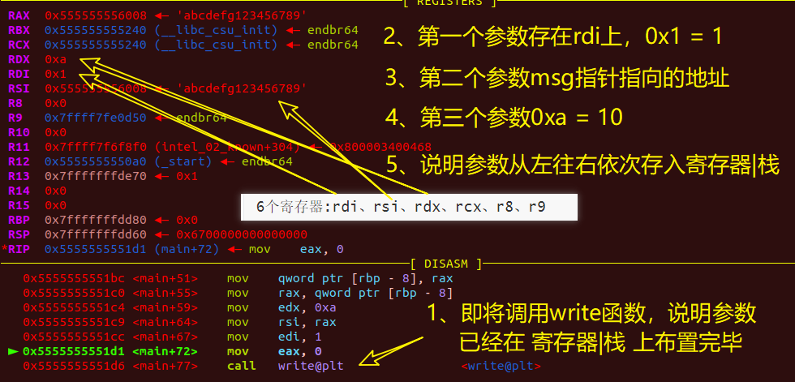
printf(“\na=%d b=%d c=%d d=%d e=%c msg=%s a=%d e=%c\n”,a,b,c,d,e,msg,a,e);
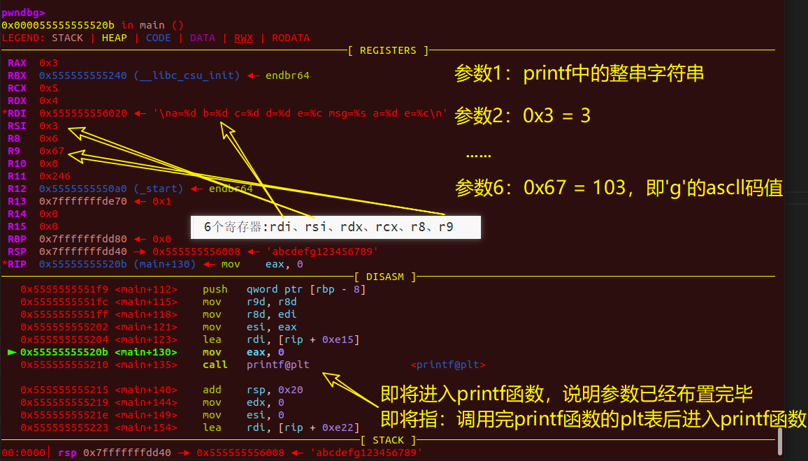
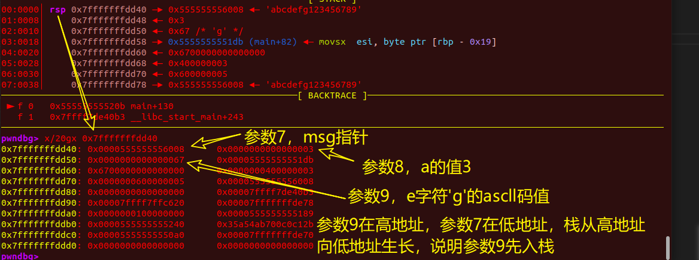
出现疑问：为什么是参数9先入栈？难道说参数入 寄存器|栈 顺序是从右往左，参数值依次从左往右标1、2、3……？
重新看write函数进行验证：的确是参数3先入栈然后依次是参数2、参数1入栈
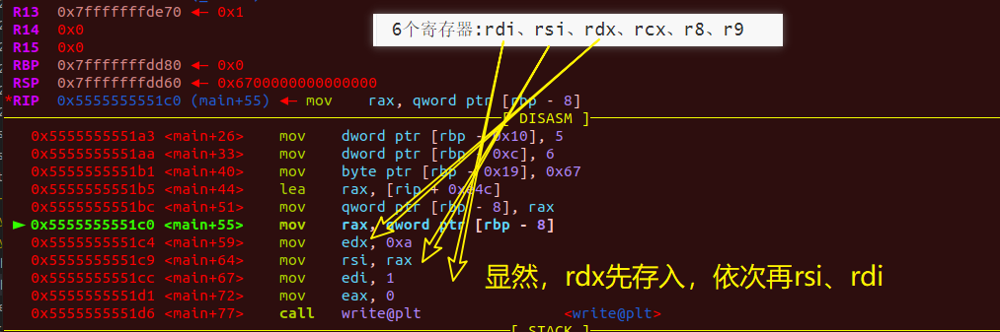
注：上面显示的是edx，不是rdx，反正我不知道为什么，把ebx理解为rdx的后32位就行
重新看printf函数进行验证：
出了点小事故，该write和printf都仅用一个msg字符串，不好区分不利于分析
again
这里重新给出C代码
1
2
3
4
5
6
7
8
9
10
11
12
13
14
15
16
17
18
19
20
| #include<stdio.h>
int main()
{
int a=3,b=4,c=5,d=6;
char e='g';
char *msg="abcdefg123456789";
char *abc="aaaabbbbccccdddd";
write(1,msg,10);
printf("\na=%d b=%d c=%d d=%d e=%c msg=%s abc=%s a=%d e=%c\n",a,b,c,d,e,msg,abc,a,e);
execve("/bin/sh",0,0);
return 0;
}
|
参数入栈顺序细究
1、write函数执行前
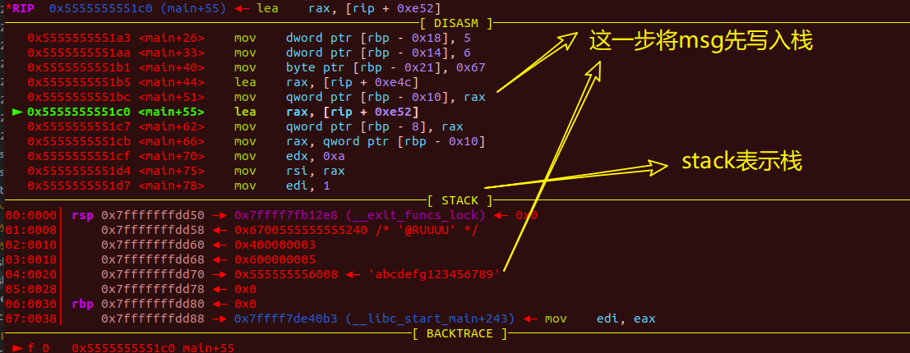
2、printf(“\na=%d b=%d c=%d d=%d e=%c msg=%s abc=%s a=%d e=%c\n”,a,b,c,d,e,msg,abc,a,e);
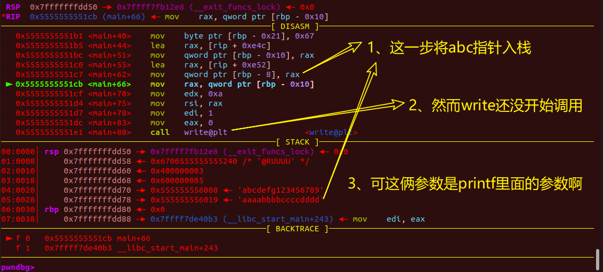
printf第一个参数：”\na=%d b=%d c=%d d=%d e=%c msg=%s abc=%s a=%d e=%c\n”
第二个：a
第三个：b
第四个：c
第五个：d
第六个：e
第七个：msg
第八个：abc
第九个：a
第十个：e
前两张图的诡异之处：
①：先是低地址(0x7fffffffdd70)上的msg指针入栈，再是高地址(0x7fffffffdd78)上的abc指针入栈
而我们的栈是从高地址生长。思考了一下，上面是通过指针直接将数据写入栈上，
可能是因为这样效率高吧，反正这也是可以理解的，目前细究感觉也没太大意义，暂时打住。
②：它只将printf后四个参数的前两个字符串地址入栈，后面的int、char暂时都没进行入栈
解释：应该是这样做效率高
③：为什么printf函数的参数在write函数开始执行前就入栈了？这对write函数尊重吗？
write函数：？！我三个参数一个都还没入，你printf就先入了俩，我write函数不要面子的 ？？？
3、继续往下走，write函数执行完后
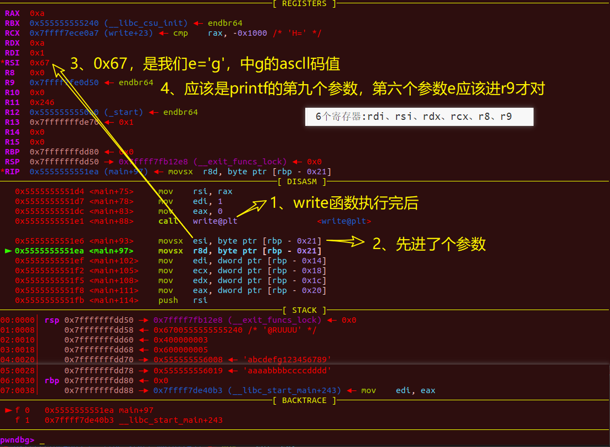
4、下面的话改一下，r8不是存第五个参数的吗？
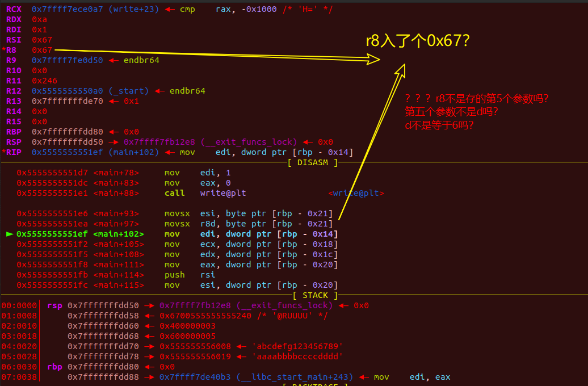
5、估计之后r8会被重新成printf第五个参数的值（d=6），那他做这一步r8赋值有什么用？冗余操作？
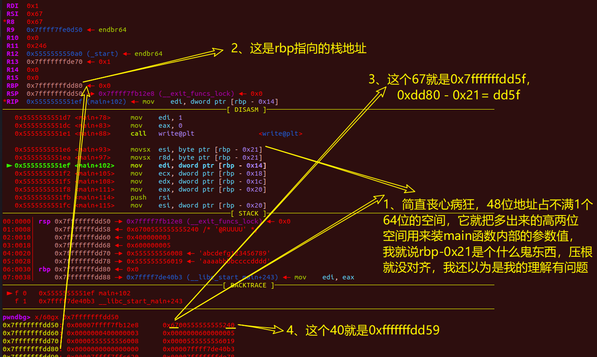
到这了，先说点个人想法吧，讲真，这底层的运行逻辑完全与我认为的应该是怎么怎么样的背道而驰
①：我觉得printf的参数就应该在write函数调用完后才入寄存器|栈（中间的”|”表示 或 ），但它printf函数的两个第六个以后的字符串地址就先入了栈
②：我觉得printf的第六个之后的参数的入栈顺序就应该是先从高地址开始入栈然后其它参数再逐步写入栈的低地址，但实际就是低地址的参数（printf的第八个参数）先入了栈，然后逐步高地址的参数（printf的第七）入栈，至于第九和第十目前还没执行到那，还不清楚，__估计是第十个先入，第九个再入高地址__，这回应该不会被打脸
③：我觉得printf函数的参数就应该一次性入栈，但他就不是（write执行前，printf入了两个指针参数到栈上）
④：我觉得它那栈上应该就是对齐的，一个64位空间就只存一个地址数据或单个数据，好家伙，它一个64位地址空间，低六字节存了一个地址数据，最高一字节空间存了一个参数的值，有必要这么省吗
我现在算是明白64位系统为什么还会有32位寄存器（esi、edi那些e开头的）那一套了，省空间呗，提高效率呗，离谱，rdi的低32位在这里被命名为edi，那rdi的高32位在这里叫啥？
感想：有够离谱的，这真是地球人能想出来的做法吗？合着我是火星来的外来物种是吧，压根就无法理解。可能是这样搞来搞去真的会在 空间&效率 上取得最优解，毕竟我目前又不搞底层这些，不知道gcc编译那一套
1
2
3
4
5
6
7
8
9
10
11
12
13
14
15
16
| # 贴太多图加载起来不方便，这里直接把汇编摘出来分析
# 下面左侧小三角代表PC指针，指eip/rip，目前广泛被称为指令指针
0x5555555551d7 <main+78> mov edi, 1
0x5555555551dc <main+83> mov eax, 0
0x5555555551e1 <main+88> call write@plt <write@plt>
0x5555555551e6 <main+93> movsx esi, byte ptr [rbp - 0x21]#rbp低地址0x21字节赋值给esi
0x5555555551ea <main+97> movsx r8d, byte ptr [rbp - 0x21]
► 0x5555555551ef <main+102> mov edi, dword ptr [rbp - 0x14]
0x5555555551f2 <main+105> mov ecx, dword ptr [rbp - 0x18]
0x5555555551f5 <main+108> mov edx, dword ptr [rbp - 0x1c]
0x5555555551f8 <main+111> mov eax, dword ptr [rbp - 0x20]
0x5555555551fb <main+114> push rsi
0x5555555551fc <main+115> mov esi, dword ptr [rbp - 0x20]
|
我好想明白了些什么，还是得从main函数的开始说起
again and again
6、disass main
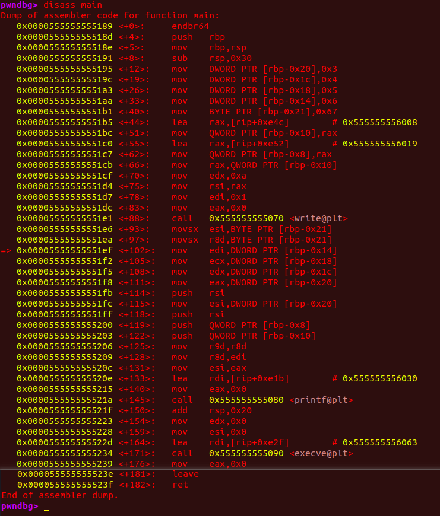
7、x/60gx 0x0000555555555189
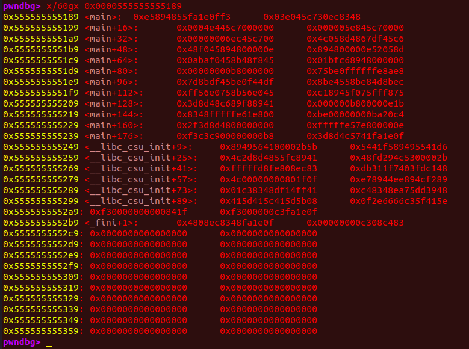
从图6中的<+0>、<+4>、<+5>、<+8>，再在我们的图七<main>到<main+16>中可以看出我们的<main>到<main+8>这小小的一段64bit空间，竟能供四条指令使用（这四条指令执行了一个函数头）
1
2
3
4
5
6
7
8
9
10
11
12
13
14
15
16
17
18
19
20
21
22
23
24
25
26
27
28
29
30
31
32
33
34
35
36
37
38
39
40
41
42
43
44
45
46
47
48
49
50
51
52
53
54
55
56
57
58
59
60
61
62
63
64
65
66
67
68
69
70
71
72
73
74
75
76
77
78
79
80
| <+0>: endbr64
<+4>: push rbp
<+5>: mov rbp,rsp
<+8>: sub rsp,0x30
#总体效果：执行了一个函数头
#<+4>:上一函数的rbp栈帧入栈保证main函数执行完后能回到上一函数继续执行上一函数
#<+5>:将rsp指向rbp，之后rbp保持不动，就靠rsp不断向低地址生长完成main函数的所有代码逻辑
#<+8>:rsp向低地址生长0x30 = 48个字节，
#给一些你定义的变量腾处暂存空间，这个值会根据你定义的某些变量的数量而改变
<+12>: mov DWORD PTR [rbp-0x20],0x3 #--因为有自带的注释，所以中间部分我加的注释用#--开头
#--将0x3 写入rbp-0x20位置，占用4字节（int）
<+19>: mov DWORD PTR [rbp-0x1c],0x4 #--将0x4 写入rbp-0x1c位置，占用4字节（int）
<+26>: mov DWORD PTR [rbp-0x18],0x5
<+33>: mov DWORD PTR [rbp-0x14],0x6
<+40>: mov BYTE PTR [rbp-0x21],0x67 #--将0x67写入rbp-0x21位置，占用1字节（char）
<+44>: lea rax,[rip+0xe4c] # 0x555555556008 #--msg字符串地址写入rax 下方图8
<+51>: mov QWORD PTR [rbp-0x10],rax #--将rax写入rbp-0x10位置，占用8字节 图9
<+55>: lea rax,[rip+0xe52] # 0x555555556019 #--abc字符串地址写入rax
<+62>: mov QWORD PTR [rbp-0x8],rax #--abc字符串地址写入rbp-0x8，占用8字节
<+66>: mov rax,QWORD PTR [rbp-0x10] #--msg字符串地址写入rax
#总体效果，完成参数入栈
#看来write函数前msg、abc先入栈是第6、7行代码的效果，与printf无关 <+62>、<+66>
<+70>: mov edx,0xa #--0xa写入edx write的第三个参数10
<+75>: mov rsi,rax #--rax写入rsi write的第2个参数msg字符串地址
<+78>: mov edi,0x1 #--0x1写入rdi低32字节 write的第1个参数1
<+83>: mov eax,0x0 #--0x0写入eax 奇怪的事情发生了，见图10
<+88>: call 0x555555555070 <write@plt>#--调用write函数过程
#效果：代码第9行write函数的执行
#可以看到write的第三个参数10最先写入rdx
#其次是第二个参数msg字符串写入rsi
#最后才是第一个参数写入rdi
<+93>: movsx esi,BYTE PTR [rbp-0x21] #--0x67写入esi
<+97>: movsx r8d,BYTE PTR [rbp-0x21] #--0x67 e='g'
<+102>: mov edi,DWORD PTR [rbp-0x14] #--0x6 d=6
<+105>: mov ecx,DWORD PTR [rbp-0x18] #--0x5 c=5
<+108>: mov edx,DWORD PTR [rbp-0x1c] #--0x4 b=4
<+111>: mov eax,DWORD PTR [rbp-0x20] #--0x3 a=3
<+114>: push rsi #--0x67入栈 此时rsp = 0x7fffffffdd48
<+115>: mov esi,DWORD PTR [rbp-0x20] #--0x3 a=3
<+118>: push rsi #--0x3入栈 此时rsp = 0x7fffffffdd40
<+119>: push QWORD PTR [rbp-0x8] #--abc字符串地址入栈 rsp = 0x...dd38
<+122>: push QWORD PTR [rbp-0x10] #--msg字符串入栈
<+125>: mov r9d,r8d #--0x67 e='g'
<+128>: mov r8d,edi #--0x6 d=6
<+131>: mov esi,eax #--eax的0x3赋给esi，原本esi也为0x3
<+133>: lea rdi,[rip+0xe1b] # 0x555555556030 #--printf第一个参数地址赋给rdi
<+140>: mov eax,0x0 #--rax置0
<+145>: call 0x555555555080 <printf@plt> #--调用printf函数过程
#效果：代码第11行printf函数的执行
#rdi、rsi、rdx、rcx、r8、r9依次存函数的第1-6个参数
#从上面这一小段来看:
# <+133> printf第1 个参数赋给rdi "\na=%d b=%d c=%d d=%d e=%c msg=%s abc=%s a=%d e=%c\n"
# <+131> printf第2 个参数赋给rsi a=3
# <+128> printf第5 个参数赋给r8 d=6
# <+125> printf第6 个参数赋给r9 e='g'
# <+122> printf第7 个参数入栈 msg字符串
# <+119> printf第8 个参数入栈 abc字符串
# <+118> printf第9 个参数入栈 a=3
# <+114> printf第10个参数入栈 e='g'
# <+108> printf第3 个参数赋给rdx b=4
# <+105> printf第4 个参数赋给rcx c=5
<+150>: add rsp,0x20 #--见图11 不知道这一步是用来干嘛的
<+154>: mov edx,0x0 #--0x0赋值给edx rdx用来存储函数的第三个参数
<+159>: mov esi,0x0 #--0x0赋值给esi rsi用于存储函数的第二个参数
<+164>: lea rdi,[rip+0xe2f] # 0x555555556063 #--"/bin/sh"地址 rdi存第一个参数
<+171>: call 0x555555555090 <execve@plt> #--调用execve函数
#效果：代码第13行execve函数的执行
#参数入栈顺序与write函数无异
<+176>: mov eax,0x0
#效果：结合后面的函数尾完成代码15行return 0；
#总体效果：main函数所有代码完成执行
<+181>: leave
<+182>: ret
#总体效果：执行一个函数尾，main函数结束，返回上一函数
|
8、lea rax,[rip+0xe4c] 汇编：lea指令学习_EagleGoing的博客-CSDN博客_汇编lea
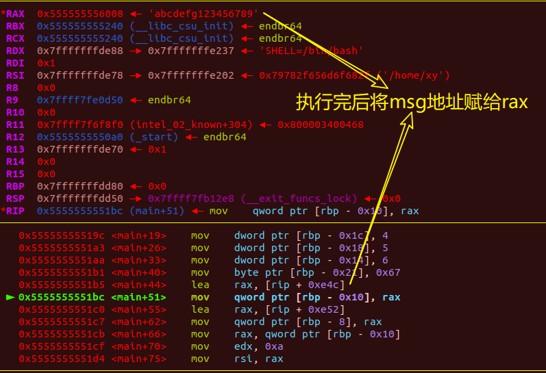
9、0x7fffffffde70估计是main函数上一个函数遗留在栈上的数据（应该不会有人以为main函数是第一个执行的函数吧？）
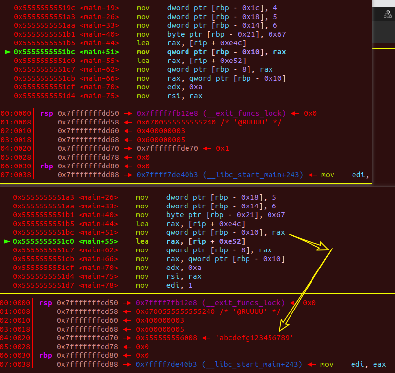
10、？？？这eax和rax到底有没有区别？
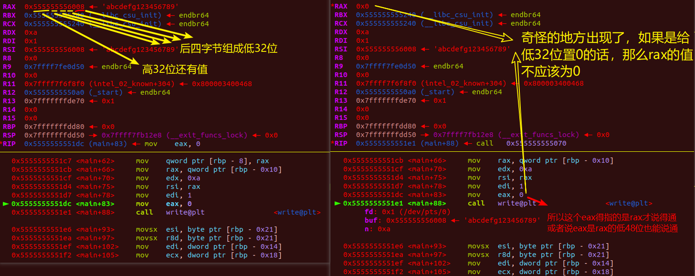
ok，大佬给出了解释：eax往rax写数据的时候会把rax的高32位清空，eax从rax读数据的时候，只会读rax的第32位字节，64位中这样设计eax只是为了方便读写
对了，为什么地址要用48位而不用64位？2^48bit=8*2^45bit=2^45B=2^35KB=2^25MB=2^15GB，寻址范围32TB，完全够用了，而且高地址多出来的2字节可以用来存一个char类型变量。
11、execve(“/bin/sh”,0,0)
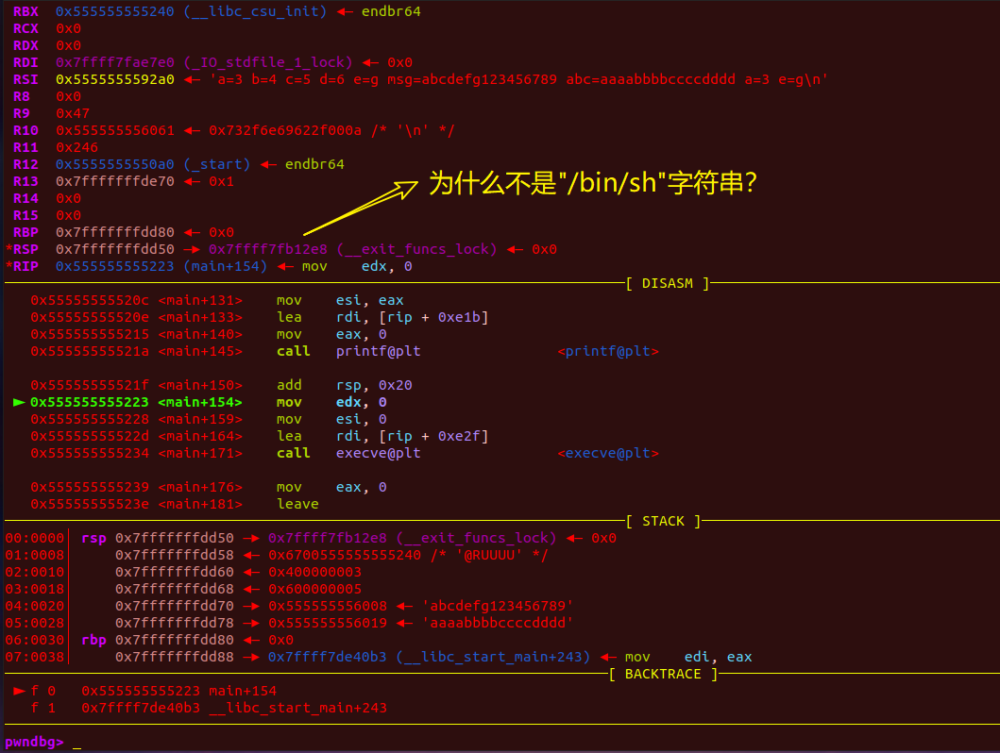
12、”/bin/sh”
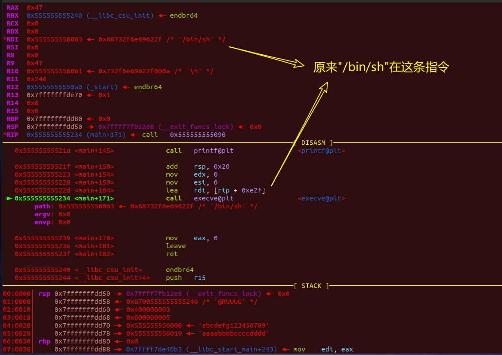
13、gdb中无法获取到shell
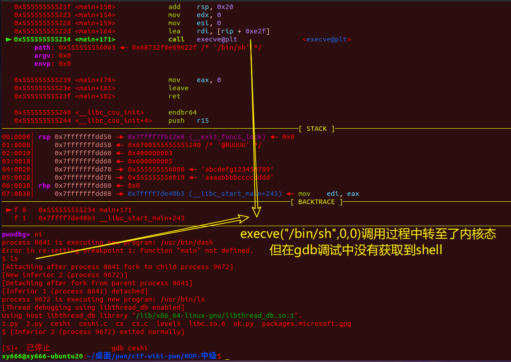
14、可以看到，在用户命令行中执行我们的二进制文件是可以获取到一个shell的，难道说gdb中权限不够？
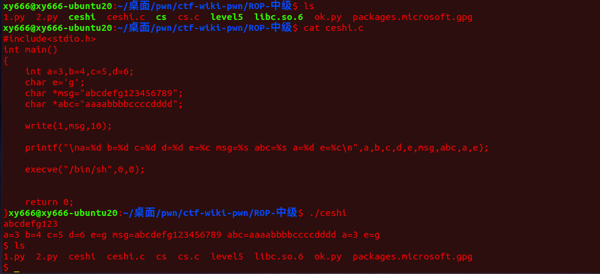
数据的栈上存储
1
2
3
4
5
6
7
8
9
10
11
12
13
14
15
16
17
18
| #源C代码
#include<stdio.h>
int main()
{
int a=0x12345678,b=5,c=5,d=6,f=0x112233445566778899,g=4,h=3,i=6;
char e='g';
char *msg="abcdefg123456789";
char *abc="aaaabbbbccccdddd";
write(1,msg,10);
printf("\na=%d b=%d c=%d d=%d e=%c msg=%s abc=%s a=%d e=%c\n",a,b,c,d,e,msg,abc,a,e);
execve("/bin/sh",0,0);
return 0;
}
|
可以看到我们的 f=0x112233445566778899只取了低位的值0x66778899
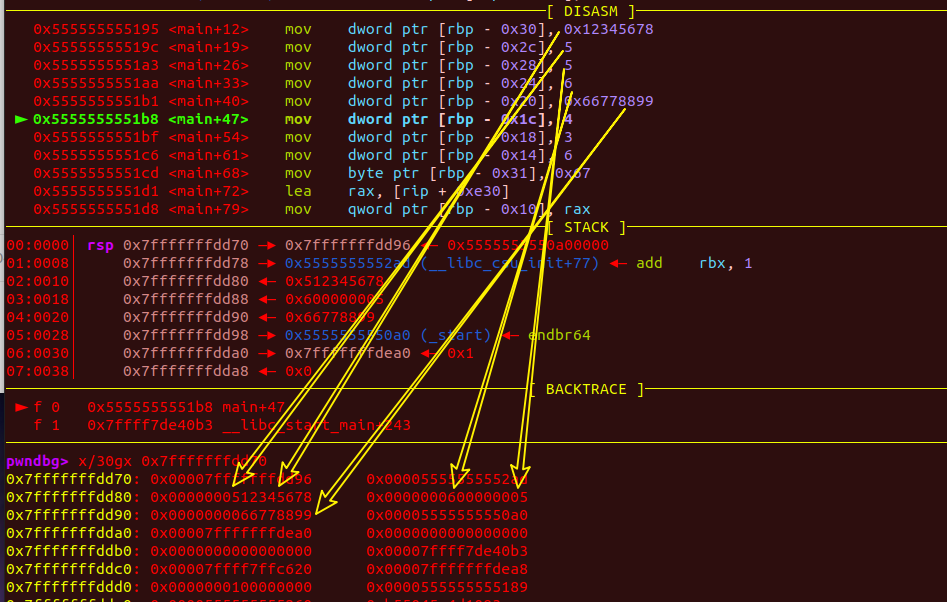
小结
1
2
3
4
5
6
7
8
9
10
11
12
13
14
15
16
17
18
19
20
21
22
23
24
25
26
27
28
29
30
31
32
33
34
| int a=3,b=4,c=5,d=6;
char e='g';
char *msg="abcdefg123456789";
char *abc="aaaabbbbccccdddd";
printf("\na=%d b=%d c=%d d=%d e=%c msg=%s abc=%s a=%d e=%c\n",a,b,c,d,e,msg,abc,a,e);
参数1："\na=%d b=%d c=%d d=%d e=%c msg=%s abc=%s a=%d e=%c\n"
参数2、3、4、5、6：a、b、c、d、e
参数7：msg
参数8：abc
参数9、10：a、e
|